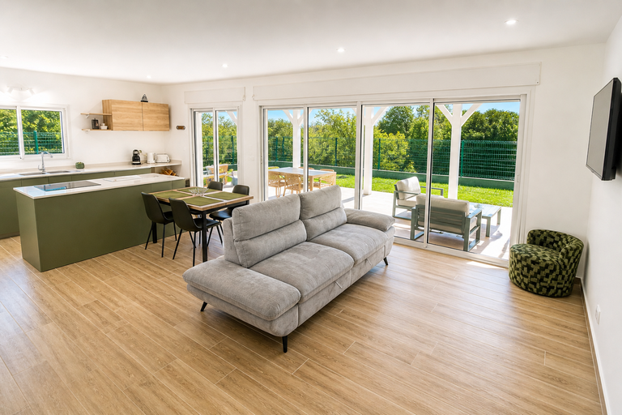
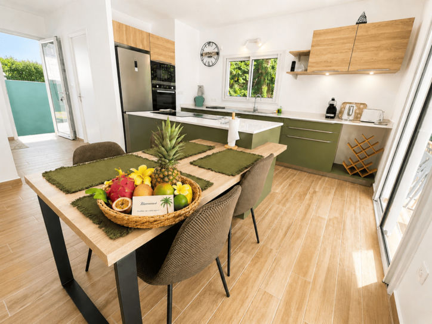
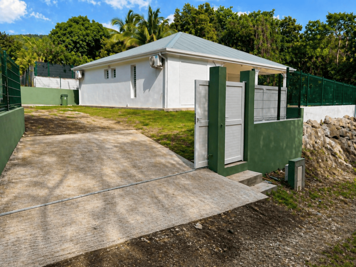

Location villa à Bouillante en Guadeloupe
Découvrez la Villa CABOUA, une villa moderne située à Bouillante en Guadeloupe, idéale pour des vacances en famille ou entre amis dans un environnement calme, verdoyant et tropical. Cette location saisonnière est pensée pour offrir confort, tranquillité et proximité avec les plus beaux sites de la Côte Sous-le-Vent.
Située à proximité de la plage de Malendure, de la Réserve Cousteau, des centres de plongée, des restaurants et des commerces, la Villa CABOUA est un excellent point de départ pour découvrir Bouillante, les fonds marins, les plages, les randonnées et les paysages naturels de Guadeloupe.
La villa accueille jusqu’à 6 personnes maximum. Les bébés de moins de 2 ans dormant dans un lit parapluie sont gratuits, dans la limite de 3 bébés, et ne sont pas comptés dans la capacité maximale.
- Suite parentale avec salle d’eau
- 2 chambres doubles climatisées
- Canapé convertible
- 2 salles de bains
- 3 WC
- Grande cuisine aménagée et équipée
- Terrasse aménagée et jardin tropical
- Wifi haut débit
- Parking privé
- Quartier calme sans vis-à-vis
Galerie photos de la villa






Équipements de la Villa CABOUA
Avis voyageurs
Villa très agréable, propre, spacieuse et parfaitement équipée. Le calme du quartier est idéal pour se reposer en famille.
— KarineExcellent séjour en Guadeloupe. La villa est bien située, proche de Malendure, des restaurants et des commerces. Nous recommandons sans hésiter.
— LudminaLogement confortable, climatisé, avec une belle terrasse et tout le nécessaire pour passer de bonnes vacances. Très bon accueil.
— KarellSéjour parfait pour se déconnecter totalement. La villa est dans la nature, sans vis-à-vis et très calme. Nous reviendrons avec plaisir.
— Famille de Saint-FrançoisLocalisation idéale à Bouillante
La Villa CABOUA est située à Bouillante en Guadeloupe, à seulement quelques minutes de la plage de Malendure, de la Réserve Cousteau et des centres de plongée. Cette localisation est idéale pour profiter de la mer des Caraïbes, des couchers de soleil, des activités nautiques et de l’ambiance paisible de la Côte Sous-le-Vent.
Vous êtes également proche des restaurants, des commerces, des services et des lieux incontournables de Bouillante. La villa permet de combiner repos, nature, confort et découverte de la Guadeloupe.
Activités autour de Bouillante et Malendure
Depuis la Villa CABOUA, vous pouvez facilement découvrir les activités les plus recherchées de Bouillante : plage de Malendure, plongée sous-marine, snorkeling, Réserve Cousteau, excursions en bateau, randonnées tropicales, sources chaudes, restaurants créoles et découverte de la Côte Sous-le-Vent.
Bouillante est l’un des secteurs les plus appréciés de Guadeloupe pour les vacances nature, les séjours en famille, la plongée et les escapades au calme. Séjourner à la Villa CABOUA permet de profiter d’un hébergement confortable tout en restant proche des plus beaux sites naturels de l’île.
Disponibilités et réservation
Consultez les disponibilités de la Villa CABOUA, sélectionnez vos dates de séjour, indiquez le nombre de personnes et envoyez votre demande de réservation.
Sélectionner vos dates
Questions fréquentes
La villa est-elle proche de Malendure ?
Oui, la Villa CABOUA est située à quelques minutes de la plage de Malendure, de la Réserve Cousteau et des centres de plongée.
La villa est-elle adaptée aux familles ?
Oui, elle convient parfaitement aux familles grâce à ses 3 chambres climatisées, ses équipements complets, son calme et son espace.
Quel est le tarif de départ ?
Le tarif commence à partir de 120 € par nuit pour 2 personnes, avec un minimum de 2 nuits.